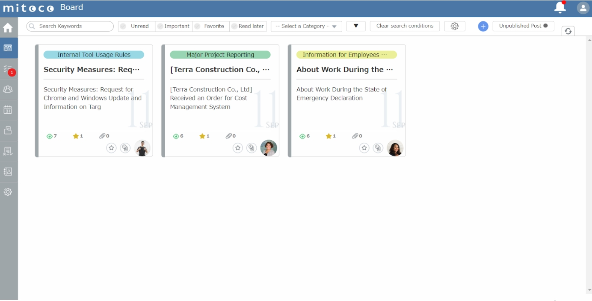

Check schedules at a glance
-
Once you have decided who will be participating in the meeting,
mitoco will automatically search for everyone's free time.
-
Manage not only employees, but also the availability of meeting
rooms and other facilities.
-
Even a meeting with many participants, schedule adjustment
function can automatically find available time.